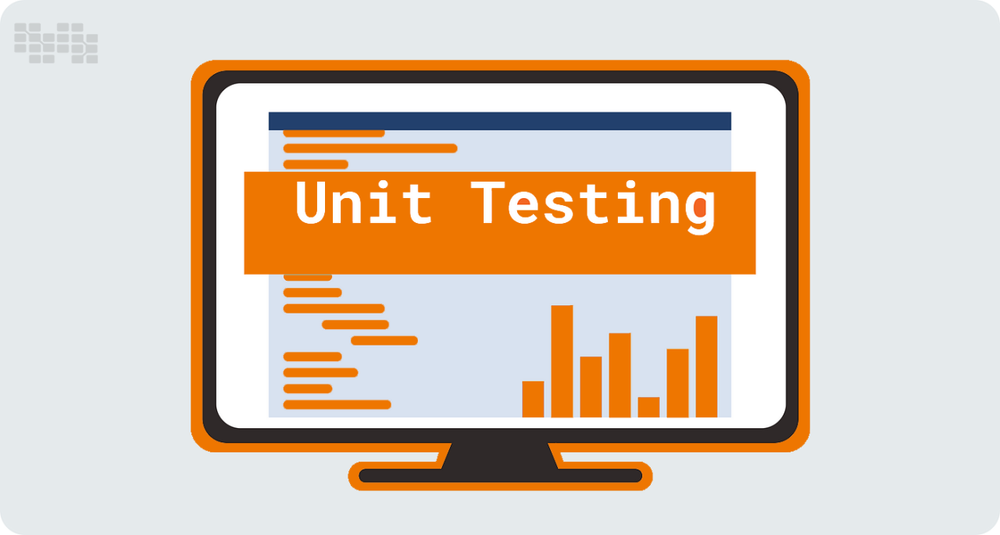
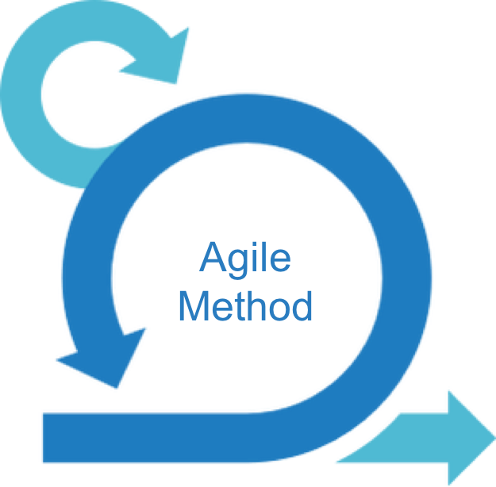
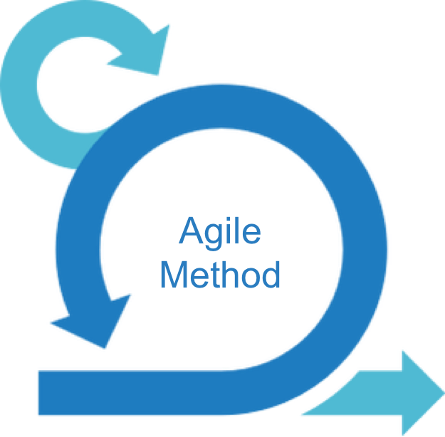

Fayçal Hamsek
Développeur Informatique
Développeur Informatique
Actuellement en 3ᵉ année de BUT Informatique à l'IUT de Villetaneuse et en alternance à l’ANFH, je participe à la gestion et à la fiabilité des données hospitalières via Oracle SQL Developer et d’autres technologies orientées bases de données.
Mon parcours a débuté en STI2D, où j’ai découvert mon intérêt pour l’informatique et les projets techniques. Au fil de mon cursus, j’ai acquis des compétences solides en développement web (PHP, architecture MVC, tests automatisés), en algorithmique et en gestion de bases de données relationnelles et NoSQL.
Je souhaite poursuivre en Master Big Data & Intelligence Artificielle pour me spécialiser dans l’exploitation et l’analyse de données massives. Mon objectif à long terme est de mettre ces compétences au service d’un domaine qui me passionne : la biologie marine, en utilisant la data science et l’IA pour contribuer à la préservation des écosystèmes aquatiques.
Développement d’un chatbot capable de répondre à des questions de santé, en particulier sur la schizophrénie, à partir d’une base documentaire médicale vectorisée.
Techno & outils : React, FastAPI, MongoDB Atlas, Hugging Face, Docker
Ce que j’ai appris : mise en place d’une API complète, intégration d’un modèle LLM via API, gestion de documents vectorisés, mais aussi la rigueur nécessaire à la gestion de données sensibles.
Création de modèles de Deep Learning pour reconnaître l’âge et le genre à partir d’images faciales, avec mise en production via Gradio et Hugging Face Spaces.
Techno & outils : Python, TensorFlow, Scikit-Learn, CNN, EfficientNetB2, Gradio
Ce que j’ai appris : gestion complète d’un projet IA, du nettoyage des données jusqu’à l’évaluation des performances (MSE, MAE, F1-score), tout en découvrant le transfert learning et les bonnes pratiques d'entraînement.
Site web permettant à des utilisateurs (humains ou bots) de participer à des tirages de loterie, avec un système de grilles, classement, gains dynamiques et simulations.
Techno & outils : PHP, PostgreSQL, HTML/CSS, JavaScript, PHPUnit
Ce que j’ai appris : architecture MVC en PHP, gestion de la complexité (règles métier, logique de simulation), développement orienté test avec PHPUnit, et surtout l’importance d’une bonne organisation dans un projet à contraintes de temps.
Janv. 2024 – Avr. 2024 · 4 mois · Hybride · Ville de Paris, Île-de-France
Ce stage m’a permis d’acquérir une expérience professionnelle riche et diversifiée, de développer mes compétences techniques et de comprendre l’importance du travail en équipe et de la communication. Il a conforté mon choix de carrière en informatique et stimulé ma créativité.
Juil. 2024 – Aujourd’hui · Contrat en alternance · Sur site · Ville de Paris, Île-de-France
Dans le cadre de ma troisième année de BUT Informatique, j’effectue une alternance d’un an au sein du service informatique de l’ANFH, après mon stage chez Les 2 Rives. L’ANFH gère les fonds de formation de plus de 950 000 agents hospitaliers. J’ai rapidement participé à plusieurs projets clés, tout en me familiarisant avec les processus et outils en place.
Cette alternance m’a permis d’acquérir une réelle autonomie technique et de renforcer mes compétences en développement, administration de bases de données et optimisation. Elle m’a conforté dans mon choix de poursuivre mes études en Master Big Data & IA et de m’orienter vers la vie marine en combinant mes compétences techniques avec ma passion pour l’environnement.
Grâce à mes expériences (SAE S3, SAE S4, stage VAE Les 2 Rives, alternance ANFH), j’ai acquis une solide maîtrise du développement web, particulièrement en PHP, SQL et JavaScript. J’ai appris à concevoir des applications respectant l’architecture MVC, à utiliser PHPUnit pour les tests, et à développer des APIs robustes pour manipuler des données complexes.


Lors de l’audit de code (SAE S4) et de mes missions en entreprise, j’ai travaillé sur l’amélioration des performances et de la qualité des applications : suppression de redondances, optimisation de requêtes SQL, et adaptation des scripts pour répondre aux contraintes métier.

J’ai découvert et pratiqué le déploiement de sites via différents environnements (local, distant, containers Docker), tout en m’assurant de la cohérence des configurations réseau et des accès aux bases de données.

Je me suis perfectionné dans la modélisation et l’analyse de bases de données, que ce soit dans les SAE ou en entreprise (ERP 450 tables, reporting via API). Je sais identifier les données essentielles, optimiser leur structure et garantir leur intégrité.


Grâce à mes projets académiques et professionnels, j’ai appris à planifier efficacement les tâches, respecter des délais stricts et assurer le suivi via des outils adaptés. J’ai également compris l’importance des méthodes agiles et de la communication dans la réussite d’un projet.
 

J’ai collaboré avec des équipes variées, tant à l’IUT qu’en entreprise. Cela m’a permis d’adapter ma communication, d’être clair et efficace, même en contexte hybride.


Depuis toujours, les océans m’inspirent par leur complexité et leur importance pour l’équilibre écologique mondial. Mon rêve est d’unir IA et science marine pour mieux comprendre et préserver ces environnements uniques.
“L'océan est l'ultime algorithme naturel, en perpétuelle évolution. À nous d’apprendre à le lire.”
Tout au long de mon parcours en informatique, entre projets académiques, stage et alternance, j’ai pu explorer différents domaines, du développement web à la gestion de bases de données, en passant par l’intelligence artificielle et le Big Data. Ces expériences m’ont permis de renforcer ma curiosité, ma rigueur et mon sens de l’analyse.
J’ai appris à travailler en équipe, à proposer des solutions concrètes et à m’adapter à des environnements techniques variés. Plus qu’un simple ensemble de compétences, ces expériences m’ont donné confiance dans ma capacité à relever des défis et à continuer à apprendre.
Aujourd’hui, je regarde vers l’avenir avec l’envie de combiner mes connaissances techniques avec ma passion pour la vie marine, et de contribuer à des projets qui allient innovation, données et préservation des écosystèmes.
Email : hamsek.faycal7@gmail.com